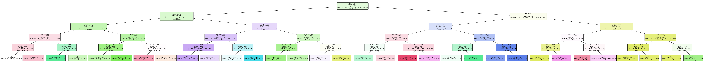

Overview
This project explored how sensory characteristics of beer - bitterness, sweetness, sourness, hoppiness, and maltiness - can predict beer style using a decision tree classifier. The goal was to determine whether measurable taste features could accurately distinguish beer types, visualized through a decision tree, confusion matrix, and classification report.
My role
I handled data preprocessing, model training, and performance evaluation. I split the dataset into 70% training / 30% testing, trained decision trees at various depths, and plotted accuracy scores to find the optimal configuration. I selected a max depth of 5 to balance performance and overfitting, then visualized the final tree with Matplotlib and interpreted the decision rules, precision scores, and node accuracy.
Key findings
The decision tree revealed clear patterns in how sensory variables relate to beer classification. Styles like IPA and Sour were highly distinguishable, with precision scores of 0.66 and 0.79 respectively, while Lambic and Porter proved harder to classify. The confusion matrix showed strong diagonal values for easily separable styles but notable off-diagonal activity for overlapping ones - suggesting sensory attributes alone don't capture the full complexity of beer differentiation. Overall accuracy landed at 59%, with an average F1-score of 0.57.
Skills demonstrated
Data Preprocessing Model Evaluation Decision Trees scikit-learn Matplotlib